第一天
5/11/2019 星期二
9:00 乘A31巴士由愉景新城出發
不知為何其實時常都去旅行啦，昨晚竟然瞓得唔好，煎魚成晚半睡半醒等天光!
機場早餐
粥+麵 粥+蘿蔔糕共HKD86.00
現時有手機上網，時間不知不覺地過，處理好工作上的安排，很快已經11時了，亦準備離境及等候登機了。
長崎諫早
六時正從長崎機場乘巴士往旅館，每位640 Yen ，晚餐輕食在飯店內包含，覺得不飽足，到外面走走看看，無意間找到pizza店，便買一個回飯店作夜宵只1080Yen.
這是一個香草蝦Pizza, 非常美味，回味無窮，也很欣賞它的包裝，方便携帶，令晚上加漆豐足。
第二天
6/11/2019 星期三
諫早田園風光
早上6：10起床
7:00在飯店吃豐富早餐，一份日式，一份英式，我倆共同分享，45分鐘完成。
回房間整拾一吓今天的行裝出發，巴士總站就在飯店附近，行數十步便到，8：20上車去県界到富地戶下車，賞秋樱、遊湖。
再到阿弥陀崎，原本去介紹過那間吃燒蠔的，但今天休業， 大失所望! 唯有往前走走，看看其他風景i，那知行了不遠的斧站，便見到另一間海景餐廳，呵！是有燒蠔的，馬上進去選用，選了一籃子蠔 1000 Yen，4串和牛燒 1400 Yen，一串香腸 100 Yen， BB馬鈴薯一份 350 Yen, 可樂飲品，每隻蠔都是新鲜的，燒烤時會打開蠔殼，殻内的海水成為吃蠔的酱醬汁，非常鲜甜，我吃了超過一打，Alex 吃了8隻，因為我是最愛吃蠔的，所以多吃些，在香港不敢多吃，但來到日本可放縱些，燒和牛更是肉質嬌嫩，飽腹一餐共3510 Yen.

吃完午餐, 沿馬路步行了兩小時多, 欣賞了很多水果巴士站。
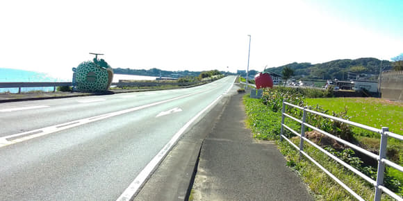接著乘巴士到附近幾個景點遊覽，但楓葉還未轉红，滿山依然翠綠，這裡遊人甚少，而且寧靜，可以自由拍照，無拘無束。
晚餐是飯店住房時巳訂餐，所以不用四出尋找，還有夜宵供應拉麵是免費的。
第三天 星期四
7/11/2019
如常7：00在飯店吃完早餐便出發，沿巴士路線來往數個景點，午餐隨便吃些定食，因為晚上有豐富的自助晚餐，今晚是入住温泉風呂酒店，豪返兩晚先!
第四天 星期五
8/11/2019
七點鐘開始食自助早餐 ，跟住去行山，登上普賢岳, 十分難行, 中途幾乎想放棄, 但 Alex 看來卻十分輕鬆!
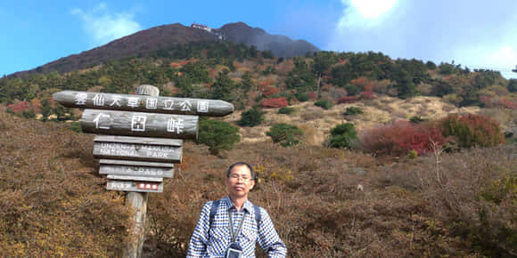跟著下山去行雲仙地嶽, 即是火山岩口。
昨晚自助餐食咗好多嘢， 今朝又係食自助餐， 所以決定中午不吃午餐， 加上行山時間長咗過了午飯時間，所以決定晚上提早食，見時間尚早，去個温泉浴先，因為都是住同一間酒店，所以今晚又食自助餐， 今晚選些昨晚沒有食過嘅食物，逐啲逐啲試，結果又係吃個飽飽的。
第五天 星期六
9/11/2019
整天行程緊凑，每程巴士上車下車遊數個景點及足湯，晚上6:30趕往餐廳，但去到已經終了，向店主懇求做多兩份晚餐,其實餐廳是晚上7：00關門的，我們答應很快完成晚餐，終於被接受並急急完成，結帳後返回旅館休息。
因為今早來到島源旅館時只是放下行李，並未Check in, 到上了房間才發現空調設定是暖房，其實是熱房才對，忍不住去找店員幫忙調整，店員進出整理一翻，给我們轉了冷房，怎知不到十分鐘後便來敲門，原來不可以改動的，因為是中央傳送，其他房也會受改動，於是維持暖房，建議我們開窗會涼些，唯有這樣吧！於是再重新入睡，希望沒有蚊子進來探訪吧！一個熱的體驗 ! 亦是全個旅程最差的一間，但房租並不平宜呵！

 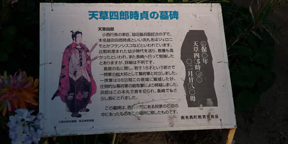
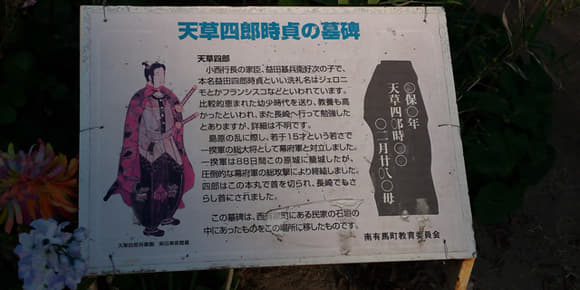
第六天 星期日
10/11/2019
早上7：00在旅館吃早餐，然後輾轉乘島原電車、渡輪及巴士到達熊本市。
午餐吃熊本拉麵+煎餃子，一份是馬肉拉麵，一份是白豚肉拉麵，二人共享，非常好味，這餐拉麵是今次旅程第一餐吃的地道拉麵
買張一天乘車券，重點遊熊本市動植物公園，因為上次在閉園前30分鐘才到達，未能盡遊，今次要遊園整個角落，看大象、獅子、老虎(似貓)多些、小鹿、企鵝、猴子、鯉魚、水鴨，還有很多鳥類等等，機動遊戲也不小，要排隊起碼半小時以上，我們只選擇了單軌電車遊園一週
經水前寺下江津湖公園、水前寺上江津湖公園步行到熊本縣廳看銀杏樹林。
真凑巧為了配合晚上要看夜銀杏樹，所以在公園附近找晚餐，哈哈！Alex上網找到就在咫尺有一間味千拉麵本店，當然馬上決定去品嚐啦！剛巧味千做特價，原本1040Yen 現在只是880Yen, 覺得很幸運，而且味道和食材更豐富，豚肉拉麵+蛋+木耳絲+雜菜，配定食還有一碗香香炒飯+唐揚雞，大滿足的一套拉麵晚餐只是900 Yen。
晚上再乘電車去商店街Shopping,還買了一盒新鮮士多啤梨回旅館吃，這晚又吃得滿飽的，也買了些湯料回港用。
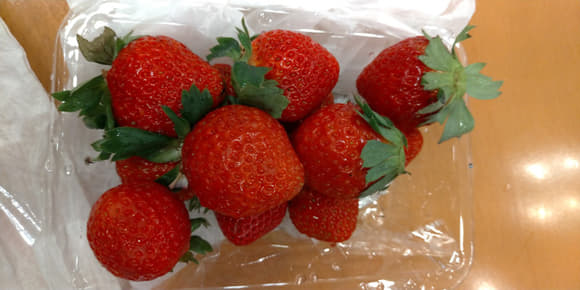第七天 星期一
11/11/2019
雖然今天是光棍節，但沒關係呢！
早上有些微雨，用完早餐便在熊本駅商場行行，買今天的 one day train pass 1000 yen 兩張，開始今天的行程
重遊熊本水前寺成趣園和熊本城，但因幾年前地震，至今尚未完全復修，所以仍然關閉，到現場思念一下，想起日本多處旅遊的地方，遊仙台之後，數年後仙台有海嘯，遊九洲、四國之後，當地又曾因颱風成災，所以可遊覽的地方，不是必然的，也要珍惜和掌握時間，日本還有些不同的閉館日，有時去到也未必可參觀的
總括今天去了幾個地方，似乎是巡查災後現況，雖然已過了幾年，但大多尚未修復，可能是資源問題吧！
 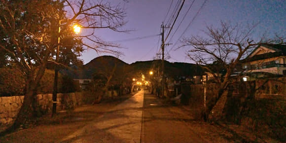
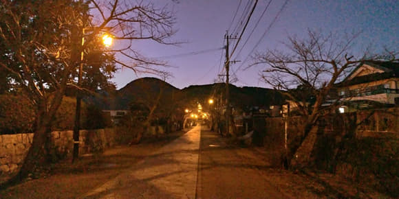
晚上在Shopping centre 一間松之屋吃晚餐定食，我選炸蠔，其實昨晚已到此預覽過，因為我喜愛吃蠔，而且日本的炸蠔外趣內軟，是這裡才做得這樣好吃的。
晚飯後時間尚早，而且很飽! 想行行才回旅館，於是過對面商場Windows shopping, 發現二樓有間(大嫂)即DAISO是100Yen 店 , 急急入內尋寶，已經聽見廣播説8時閉門，那時尚有10分鐘，只能買到薰衣草香薰一瓶連税110Yen，已經沒時間找其他的了，早知熊本市有(大嫂)就不會四處逛，也沒想到商場會8時關門呵！
第八天 星期二
12/11/2019
早上離開Toyoko inn, 乘火車去三角港, 然後遊覽三角漁港、海之金字塔、三角港綠地公園。
之後乘火車到赤瀬一再行20分鐘到道之駅，到達目的地原意是吃魚生飯，當到達時只見有廣告是吃Burger的，於是行過去超市逛逛，原來食店就在裏面，是有魚生飯吃的，魚生很鮮甜而且入口易容，很滿足的午餐

黄昏去千瀉景勝地看潮退及潮漲，是我人生第一次看到如此特別的景色，如圖畫般的美, 真是值得欣賞。
晚上回旅館附近的YouMe supermarket買魚生和便當，回旅館内有用餐的廳堂吃，很有家的感覺。

第九天 星期三
13/11/2019
因為這間座立於海港的旅館沒有早餐和晚餐供應，所以我們用昨晚预購的麵包和牛奶，杯麵和蒲燒鰻魚作早餐。
當Alex説今朝的上半段行程是行山，我就建議分頭行事，我在旅館附近行行，然後返旅館浸個熱水浴和洗頭吹髮，稍作休息並約定在下一個景點會合才一超吃午餐。
剛吹完頭掛起風简，Alex傳WhatsApp來説 : 在山頂上將要下山往三角西港與我會合，但下山途上沒有方向指示，進入疑似森林的地方，聽著汽車聲往下走，希望沒走錯吧！終於只在預定時間稍遲十分鐘便與我會合了。
我乘巴士從旅館到三角西港只十分鐘車程便到，先找尋食事的好地方，有間西餐廳是向海的，門外的廣告有和牛和馬刺，價錢不太貴且合理，於是预告予Alex知道，四週再逛逛…. 。
不一會他巳經下到山下找我了，於是一同去西餐廳用午膳，叫了兩份人氣No.1的和牛定食，原來是和牛漢堡扒才對，但味道不錯，沙律菜很新鮮，湯汁很清甜，坐著望海的餐桌，餐廳還播著聖誕歌曲，這種環境真的難求呵！讓我們在這裡预祝聖誕吧！有山、有水、有小船在海上來回，有聖誕歌聲不停地播放伴著我們進餐，真是好得無比了。
第十天 星期四
14/11/2019
早上天陰，9：00 後轉睛。
離開旅館往下一站天草區，又是另一個温泉，但這區的泉水温度比較弱，足湯簡直是室温水而巳，沒有熱氣的滿足感，旅館的風呂尚算可以，較為細小，勝在可以獨享。
我們三時入住，四時才有風呂，我選擇在房間休息一會才去享受風呂，Alex則上山展望台觀賞拍照，五時30分他便回來享用風呂，六時便開始豐富的晚餐至七時半才吃完。
晚餐是旅館包餐的，有燒魚和刺身，天婦羅及多種前菜，飯團，水菓等等，簡直飽得滿瀉，新鮮好味，這間是行程中最貴的一晚,供應兩餐，房間也面海望橋，绝對是渡假的理想居。
第十一天 星期五
15/11/2019
早餐是旅館包的，坐在面海有橋有月亮伴著吃早餐的廳房内，不論食物和環境都很好，當然價錢也高一點，這個旅館一晚是21,200Yen 包早晚兩餐，算是不錯的。

因為沒有直通車從松島往下田 , 我們要先乘快車(巴士)往本渡, 然後轉車到下田溫泉，十分費時。
今天行程可算是巴士遊覽各教堂，各有不同背景。
剛收到消息，公司由15号至18号休業，其實我們訂機票已是年初落實的，根本不知道往後幾個月會發生什麼事, 真是變化莫测!
晚餐是旅館包的，有刺身、燒魚、天婦羅等等，是一個大滿足的晚餐。
第十二天 星期六
16/11/201
6時起床便去浸温泉浴，下田這個地方的泉水較之前的熱多10度以上，感覺很舒服，全身温暖。
早上乘巴士往天草十三佛公園及天草妙見浦看海岸奇岩怪石絕景。


中午買魚生刺身及便堂輕食。
下午從天草下田溫泉乘巴士到本渡, 然後轉乘另一路巴士到苓北町‧富岡港。酒店晚餐是盛大晚餐要留肚吃，果然很特別，有餐前酒，有活飽魚即燒即食，鲷魚刺身整條，魚骨也炸熟很趣口的，配上天婦羅和前菜，非常豐富，追加了兩杯石溜汁另費1100Yen 為晚餐加添完美
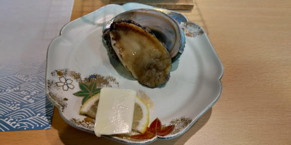 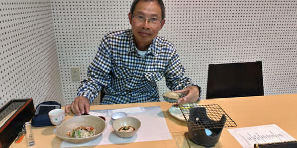這裡的風呂是帶有潤滑劑似的，是旅程中最理想的温度和潤滑，而且是在頂樓，面向海景，非常休閒舒適，很滿足的渡假!
晚上回房間收看YouTube, 不禁有㸃慨歎!
盼望上帝憐憫吧！
第十三天 星期日
17/11/2019
天睛，這十三天來都感恩，天氣很好，不冷不熱，輕便裝已足夠。
早餐後步行登上山頂上的富岗城跡遊覽。

然後打算乘10時的船往茂木港，怎知去到船場購票時才發現原來看錯時間表，今天班次是9：15 或13：40,沒辦法只好買13：40吧！但多了兩個多小時怎麼辦呢？唯有在附近行公園，行海灘拍風景吧！其實這裡四面環海，景色從房間望出來巳經很美，如果一早離開，真的有點可惜，我真的有點捨不得在10時就離開，那麼錯有錯著，可以多留兩小時，在這裡多拍些景點，吃個便當休閒地享受完才離開吧！
在船場內等候時，巡巡場内的擺賣，看到有雪米糍，便問Alex吃嗎？他ok所以我們一人吃一粒，不經不覺便到上船時間了，我們上船拍拍照，45分鐘便到達長崎，進到旅館取房間，這間同樣有風呂的。
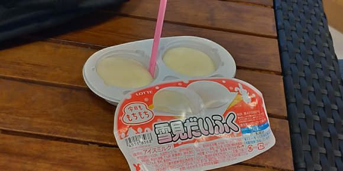 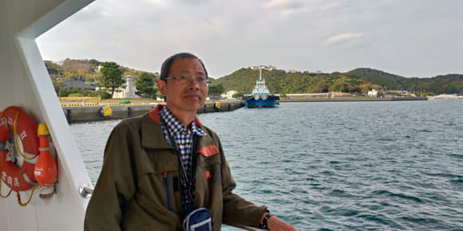第十四天 星期一
18/11/2019. 陰天，下雨
旅館自助早餐，中西日美點，式式俱全，飽吃一餐，又展開今天的行程。
因天雨關係，行行停停要避雨， 我們今天可算是見步行步。
中午是吃簡單便當，晚上我可以去行公司和通道shopping，長崎有兩間100Yen, CAN DO 和 DAISO， 購物不用理價錢，真的很爽，而且是日本制的，品質有信心! 今次旅程在這裡買了不小戰利品呢！
第十五天 星期二
19/11/2019
早上再先去泡泡温泉然後享用旅館的自助早餐，到Alex預定的景點行行走走，這區的屋層層叠的很密集，來到公園内一個小小動物園，有可愛的猩猩，鴨子，雞和鳥，拍拍照後再到週邊遊覽。
中午到市場吃鲜魚定食，商店營業的不多，疏疏落落的，但賣的都是新鮮疏果和鮮魚，還有生蠔，可惜見到生蠔的時候，我們已經吃了午餐，否則一定要嘗嘗，只是250Yen 一袋約有六隻! 真是平宜!
我們乘搭3:30的機場巴士提早去長崎空港，大約一個小時車程才到達，可在機場瞭望台看看，我亦可把握最後購物機會，而且有些展銷是有試食的，我當然不會錯過呢！
提早今天的晚餐於五時在機場餐廳完成，當然食物要求飽肚而已。我選拉麵, Alex選日式定食。
過行李安檢時，今次旅行是最嚴謹的一次，我見前面有人被要求打開行李箱檢查，我也有預感我的背包也會被檢查，雖然我沒有違禁品，只是花點時間吧！果然要查我背包內的液體物品，都是每瓶40ml 的香薰油和Lotion, 其實100ml 以下是可以帶的，不知為什麼要被檢，當然可以帶回去,那些是可以上飛機的，海關很仔細看瓶上所寫的成份，我有一小瓶是自帶的嗽口水，因為瓶子沒有成份說明，所以要充公，我表示同意，也體諒他們的謹慎，但其實瓶子的成份可能與所盛的不同，不知為何吉瓶所盛的就不能帶？下次我帶補充裝，要用有成份説明的瓶子裝上，這是從未發生過的，但安全是最重要的，我也配合。
總括今次日本秋遊是個溫泉之旅, 因為九成時間都是入住溫泉旅館，只是有一間熱房要打開窗睡覺而已，其中入住酒店也有浴缸可以浸浴，我也有自帶泡湯的浴鹽，所以即使日行千里，也可以得到鬆弛，整個旅程有三次購物時間，買到手信和自用的禮物，是一個真正渡假的旅遊，吃新鮮魚生、燒生蠔、燒活鮑魚兼有海景餐廳用膳，看潮漲潮退，日出日落，暫時不去理會其他事情，希望回去後事件已平息吧！